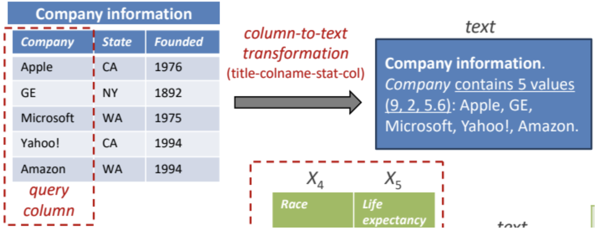

The implementations we developed for these two baselines can be found in Freyja's Github repository (DeepJoin, WarpGate), with a easy-to-use implementation and extensive documentation with installation guidelines and execution instructions.
WarpGate
WarpGate's join disocvery mechanism is straightforward and can be divided into two main steps:
Embedding generation: Produce embeddings of the tables using models specifically designed for tabular data.
Indexing with LSH: Store these embeddings in a locality-sensitive hashing (LSH) index for efficient retrieval.
At query time, the index is traversed to select the closest elements to the query (i.e., those in the corresponding LSH bucket), and a similarity search is performed on this reduced subset of potential joins.
The original WarpGate paper does not specify the embedding model used, but outlines three criteria to select one: (i) it should be pre-trained on tabular data, (ii) trained on large table corpora, and (iii) have reasonable inference time. Several models meet these requirements, including TABBIE, TURL, TAPAS and TABERT.
We selected TABERT because, despite slightly slower inference, it serializes the table (rows and columns) together with associated natural language text (e.g., table descriptions, queries, or surrounding web text). This enables the model to connect column headers and cell values with linguistic meaning (e.g., “capital” ↔ “city name,” “GDP” ↔ “economy”). Additionally, it was trained on millions of real web tables aligned with natural language, providing embeddings that better capture the underlying properties of columns. We employed TABERT-K3 with the default parameters.
Once embeddings are generated, we build the LSH index, which buckets embeddings using a family of locality-sensitive hash functions, creating natural neighbor groups. At inference, the query column is hashed, closest neighbors are retrieved, and similarity is computed only among them. We configured the LSH index with standard parameters: 16 hash hyperplanes, 8 tables and multiprobe activated. Similarity is assessed via cosine similarity, so embeddings are normalized before storage.
DeepJoin
We though about including PEXESO in the evaluation. However, PEXESO was one of the first fully embedding-based join discovery systems, and more modern approaches have since built on its ideas, rendering PEXESO somewhat obsolete. We therefore chose to include DeepJoin, a natural evolution of PEXESO. While PEXESO introduced the embedding-based similarity join concept in data lakes, DeepJoin enhances it by leveraging pre-trained language models and fine-tuning to achieve higher accuracy, better generalization, and faster performance.
This also differentiates DeepJoin from WarpGate. WarpGate does not perform fine-tuning, as it simply uses table-specific embeddings generated by an embedding model. DeepJoin, in contrast, fine-tunes SBERT, a generic embedding model, specifically for similarity search in join discovery tasks in the context of data lakes.
Since DeepJoin’s implementation is not publicly available, we contacted the authors and they provided a set of instructions to implement DeepJoin, which consists on five major steps (note that these need to be followed for every benchmark):
Obtain training data. Given that we have to fine-tune the embeddings, we need the necessary training data to do so. This training data consists of pairs of columns that can be classified into two main groups: positive examples, that is, pairs of columns with “high” joinability and negative examples, that is, pairs of joins with “low” joinability. Following the recommendations of the authors, we assessed the join quality based on containment, with positive examples being those pairs of columns with a containment > 0.7. The negative examples were obtained using in-batch negatives, that is, shuffling the pairs identified as positive examples to create uncorrelated joins. To thoroughly train the model, we obtain 5.000 positive examples and generate 15.000 negative examples, for each benchmark.
Note: This is the main bottleneck of DeepJoin, as it requires searching for “good” joins in each datalake, which implies that the larger and the more heterogeneous that a data lake is, the more time will be required to find these positive examples, increasing exponentially. The execution times stated for DeepJoin follow the previously stated configuration except for the TUS Big and Santos Big benchmarks due to the excessive amount of time required to find all of these joins. For the TUS Big dataset we collected just 1.000 positive examples and for Santos Big this was reduced to 100 positive examples.
Prepare the training data. The model that will generate the embeddings is a standard SBERT, which requires text. Hence, following the recommendations of the paper, for each column of the benchmark we generate its textual representation by concatenating: table name, column name: number of distinct values, maximum, minimum and average number of characters of the strings in the columns and the list of values themselves. An example of the resulting training value extracted from a column can be seen next (proceeding from the original DeepJoin paper):

Figure 1. Embedding mechanism of DeepJoin
Train the bi-encoder model. As stated, we will fine-tune the embeddings to perform join detection. Following the authors’ recommendations we employ SBERT as base model. More precisely, we use the all-MiniLM-L6-v2 model (384-dimensional embeddings) with mrnloss as the loss function, which only works on binary labels. Hence, all positive examples are assigned the label “1” and all negative examples the label “0”. The original paper indicates the following values for the model’s hyperparameters, which we also adopt: batch size = 32, learning rate = 2e-5, warmup steps = 10.000, and weight decay rate = 0.01. As for the number of epochs, we tried to balance training time with accuracy, so we followed a dynamic approach that reduced the number of epochs from 20 to 5 as the size of the tables increased (from less than 5.000 to over 1.000.000).
Generate embeddings. After training, we generate the embeddings of all the columns in each benchmark. Batch size is fixed at 256.
Store embeddings in index. Similarly as with WarpGate, we store the embeddings in an index to perform quick retrieval and comparison. Here, though, instead of employing LSH index, the authors recommend to use a Hierarchical Navigable Small World (HNSW) index through the FAISS Python library that combines HNSW with IVF, PQ, and GPU acceleration. We employ the recommended configuration: hnsw_m = 32, hnsw_ef_search = 64, nlist = 1000, pq_m = 16 and pq_bits = 8. The similarity assessment is done via cosine similarity, so we normalize the embeddings before storing them. At query time, the index is traversed to retrieve the k nearest neighbors.